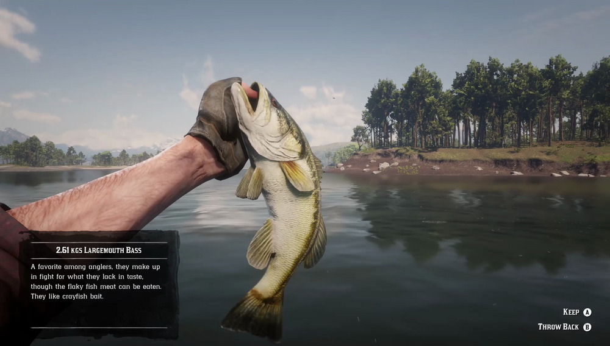

Largemouth Bass inhabit open and flowing water all around the Southern States. They can be easy to spot, due to swimming energetically near the surface, but less easy to catch. Anglers report that Largemouth Bass didn't seem to care for most lures, but responded well to fresh crayfish. Rainy weather is linked with increased activity. Some say that the San Luis River is home to a Legendary Largemouth Bass.
San Luis River, Flat Iron Lake, Upper Montana River, Lower Montana River, Bayou Nwa, Kamassa River.
